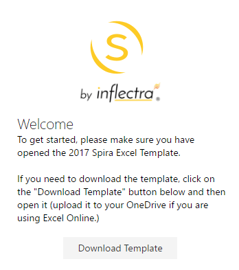
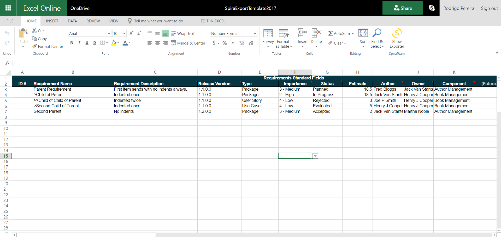
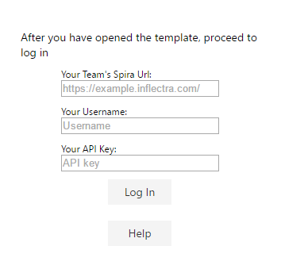
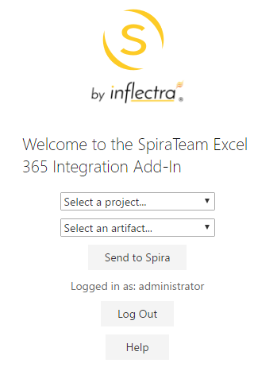
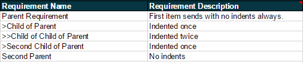
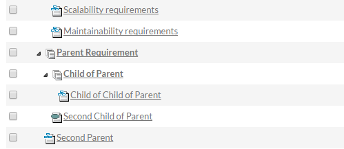
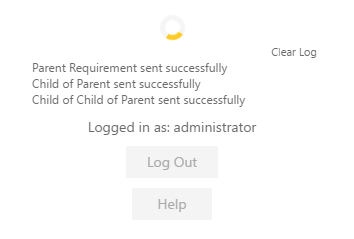

Importing from Microsoft Excel (Office365)
If you are using Office365 in the cloud (via a web browser) or if you are using Microsoft Office 2016+, you can use the dedicated Office365 Microsoft Excel add-in.
Installation
To install the add-in, go to the insert tab in Excel. Click on "Office Add-Ins" and in the window that opens navigate to the store tab. Enter "SpiraTeam Excel 365 Integration" into the search bar and search. When you see the correct add-in developed by Inflectra, click on the "Add" button associated with it. You should now see the SpiraTeam icon labeled "Show add-in" in your home tab. Click on it to begin.
The Template
Downloading and Applying:

When you first open the add-in, you should see the following in your welcome screen:
Click on the "Download Template" button to begin the download. If you are using a desktop version of Excel open the file as you would any other workbook.
If you are using Excel Online, you will need to upload the file to your OneDrive. You can get to OneDrive quickly by clicking on the menu icon in the top left corner of Excel Online and selecting OneDrive. You should now see the following in your Excel Window:

At this point please click on "File" and "Save As". Create a new copy of the template and name it after the project you plan on working on. Remember to do this before making any changes to the template or logging in to avoid overwriting your original template.
For a full description list of the template fields, please refer to the table in Excel. The only differences are the (temporary) exclusion of the linked requirements and comments fields, as well as the 30 "CUS-01" style custom fields. This add-in will load your custom field names dynamically. To do this, you must now log in.
Connecting to SpiraTeam

Once the template is loaded, click on the SpiraExcel add-in ribbon icon to show the exporter and fill in the following fields:
-
Your Team's Spira Url: The web address that you use to access SpiraTeam® in your browser. This is usually in the form https://<hostname>/SpiraTeam.com. Make sure to remove any suffixes from the address (e.g. /Default/aspx). The url must be an https address, if your url does not begin with https:// it will not work.
-
Your Username: The username that you use for logging in to SpiraTeam
-
Your API key: The API key associated with your SpiraTeam account
You will be notified if there is an issue with your url or the user information you provided. If your log in is successful, you will see the following screen where you can select a SpiraTeam project to load information from:

Select a project and an artifact to populate the fields in the template that have drop down lists associated with them (e.g. users, releases, components, etc.) and populate the list of custom fields associated with the project. You are now ready to begin creating requirements.
Creating Requirements
After you have selected your project and an artifact (currently only requirements are available) You may start filling out your worksheet. The ID # field should be left empty for new requirements. If the field is not empty the row will be ignored. This is to avoid affecting any existing requirements.
Custom Fields: If you have selected your project and artifact type, you should see the custom fields associated with your project in the custom fields section of the template (it will be empty if your project has no custom fields for requirements). You must know what data the custom field will accept. For a list of acceptable data types for different fields, refer to the template field chart in Excel.

Indenting and Hierarchy: Indents are handled with a ">" symbol. The farther in a requirement needs to be indented, the more ">" symbols are required. The first requirement will always be at the root level. For an example of this, refer to the values in the template:

If you were to send these new requirements to your existing project, they would show up in SpiraTeam like this:

Event Log: When requirements are sending, you will see a loading spinner and a log of progress that looks like this:
Here is a list of possible messages:
(Requirement name) sent successfully: The requirement in line was successfully created in SpiraTeam
(Requirement name) failed to send: The requirement could not be created in SpiraTeam. May be missing a required field. Check console for response from API.
(Requirement ID) was not updated: The requirement had a value in its ID field and was ignored. If it was intended to be a new requirement, please clear the ID field and try again.
Done!: All requirements in queue have either been created, rejected, or ignored.
When requirements are sent successfully their ID field will be filled out with the new ID created in SpiraTeam.
To clear the event log, click on Clear Log.
Saving the Worksheet and Logging Out
Make sure you had previously created a new file by selecting Save As so you don't overwrite your template. Name the worksheet the same as your project so it is easy to keep organized. Excel will then either auto save any changes you make or you can save the worksheet the same as any other worksheet in Excel.
When you have finished sending requirements to SpiraTeam, click on Log Out to disconnect and return to the log in screen.